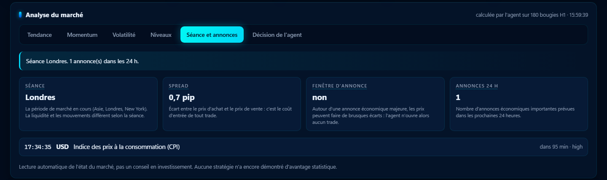
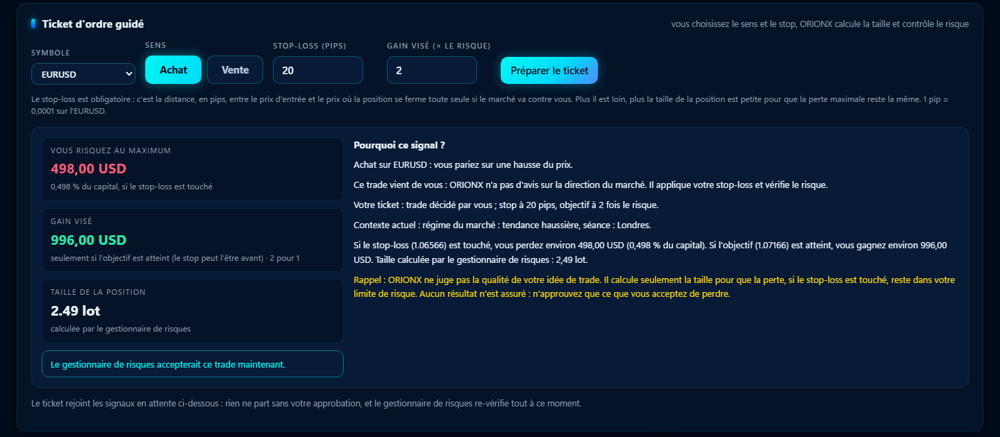
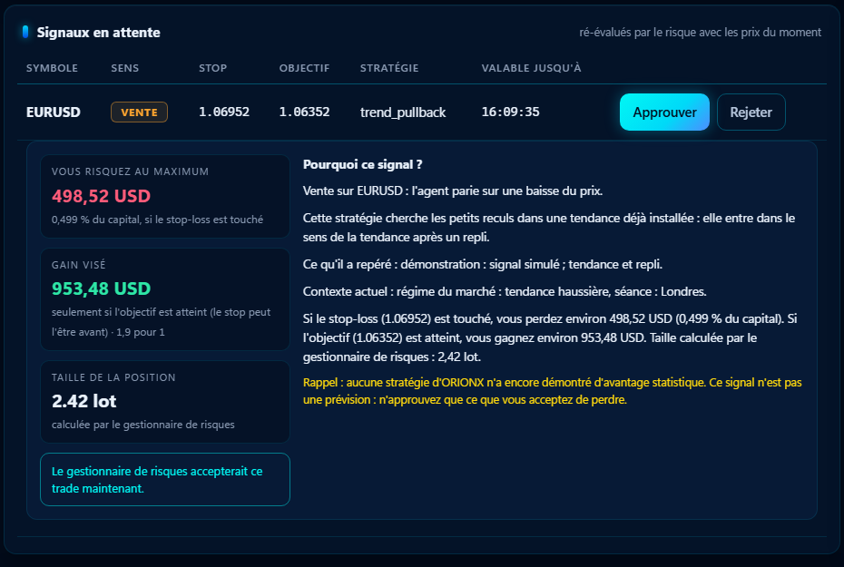

Risque sous contrôle
Stop-loss obligatoire, perte maximale du jour et de la semaine, exposition par devise, toute hausse du risque retardée de 24 h.
ORIONX analyse le marché, propose des trades et ne les exécute que s'ils passent un contrôle de risque strict. Vous gardez la main à chaque étape.
Chaque idée de l'agent est une impulsion qui traverse le réseau, puis rencontre le périmètre de contrôle du risque. Celles qui respectent vos limites passent ; les autres sont refusées, et le refus est inscrit au journal.
Illustration animée : aucune donnée de marché réelle, aucun résultat promis.
Chaque proposition traverse un gestionnaire de risques déterministe avant d'atteindre le marché. L'intelligence propose, le code décide.
Stop-loss obligatoire, perte maximale du jour et de la semaine, exposition par devise, toute hausse du risque retardée de 24 h.
Seul un ordre approuvé et signé cryptographiquement par le gestionnaire de risques peut être exécuté, avec une courte durée de validité.
Équité, positions, signaux à approuver et événements en temps réel, dans votre navigateur, sur votre propre machine.
Arrêt automatique, coupure du terminal, ordre exécuté : les événements importants arrivent sur Telegram, sans jamais bloquer l'agent.
Trois niveaux, en un clic : pause des entrées, protection des positions, clôture totale. Reconnexion automatique après une coupure.
Chaque décision, approbation et refus est inscrit dans un journal chaîné par hachage, vérifiable à tout moment.
Analyse du marché en six onglets, ticket d'ordre guidé, signaux expliqués en langage simple avec les montants en jeu.



Données de démonstration simulées. Le tableau de bord est actuellement disponible en français.
L'agent se rattache au terminal déjà ouvert sur votre PC. Aucun identifiant n'est stocké dans le code.
Régime de marché, volatilité, séance, annonces économiques : chaque signal est expliqué et ré-évalué par le risque.
Signaux seuls, approbation manuelle ou automatique verrouillée : vous choisissez le niveau d'autonomie.
L'agent tourne sur votre PC Windows avec MetaTrader 5. L'application mobile permettra de suivre l'agent et d'approuver les signaux depuis votre téléphone.
Les applications ne sont pas encore publiées : inscrivez-vous à la liste d'attente pour être prévenu.
Aperçus du tableau de bord ORIONX, données de démonstration.
ORIONX est en développement actif. Rejoignez la liste d'attente pour suivre les étapes et tester l'agent en compte démo.
Voir les offres